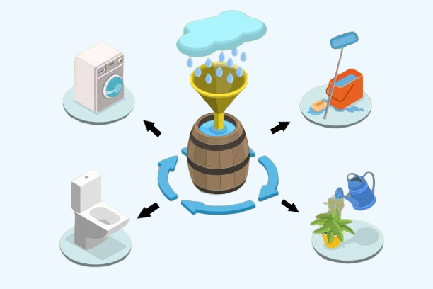

Als de regenton vol zit en er is een hevige bui voorspeld, dan leegt de ton zich automatisch om de piekbui op te vangen. Als er droogte voorspeld is, houdt de regenton zoveel mogelijk water vast. Dit water kan je op een optimaal moment inzetten, zoals het beregenen van groen of het wassen van je auto. De b-RAIN app communiceert met onze slimme kraan en geeft je inzicht in hoeveel water er al bespaard is, wat de neerslagverwachting is en wanneer je je tuin het beste water kan geven.
.png)
Welkom bij b-RAIN
de toekomst van ons water!
Klimaatverandering zorgt voor meer droogte en wateroverlast door intense buien Ons riool kan al dat water bij een bui vaak niet aan, en zorgt voor wateroverlast en vervuild rioolwater in ons toch al kwetsbare oppervlaktewater Het is tijd om massaal ons regenwater vast te houden en her te gebruiken. Nederland heeft ongeveer 15 miljoen regenpijpen. Als je een (kleine) regenton installeert van 100 liter, en je leegt een volle ton tien keer in een jaar in je tuin of op je bedrijventerrein... Dan ontlasten we ons riool met 1.5 miljard liter water per jaar Maar hoe zorg je ervoor dat dit gebeurt zonder dat je zelf elke keer de kraan van je regenwateropslag open hoeft te zetten? Het is tijd om slim met ons water om te gaan: be b-RAIN!
Wat is b-RAIN?

b-RAIN is de manier om zo optimaal mogelijk om te gaan met de neerslag rondom je huis. Met slimme technologie, gebaseerd op weersvoorspellingen, regelt ons product automatisch de hoeveelheid water in de regenton, zodat je altijd het meeste uit je waterreservoir haalt zonder er tijd aan kwijt te zijn.
Waarom b-RAIN?
text
De b-RAIN app
Met behulp van de gratis Brain-app heeft u ieder moment van de dag inzicht in uw wateropslag. Op deze manier krijgt u inzicht in de hoeveelheid water die u beschikbaar heeft, hoeveel u bespaard heeft maar ook wat de verwachtte wateropslag is voor de komende zeven dagen. Daarnaast kunt u via de app het kraantje ook zelf bedienen.
Doordat de b-RAIN app gekoppeld is aan verwachte weersvoorspellingen hoeft u zich ook geen zorgen te maken als het buiten gaat vriezen. Bij langdurige lage temperaturen zal de regenton zichzelf automatisch legen zodat er geen schade ontstaat aan de ton.
Over b-RAIN
b-RAIN is ontwikkeld door Spatwater
SPATwater bestaat uit een nieuwe generatie enthousiaste hydrologen die met een technische achtergrond nét wat anders kijken naar ruimtelijke opgaven. De uitdagingen zijn enorm, maar de kansen die het biedt nog groter.
klik hier om naar Spatwater te gaan!
Contact
Wij houden van korte lijntjes, jij toch ook? Kom met ons in gesprek om de mogelijkheden van b-RAIN te bespreken door een mail te sturen naar info@b-rain.nl